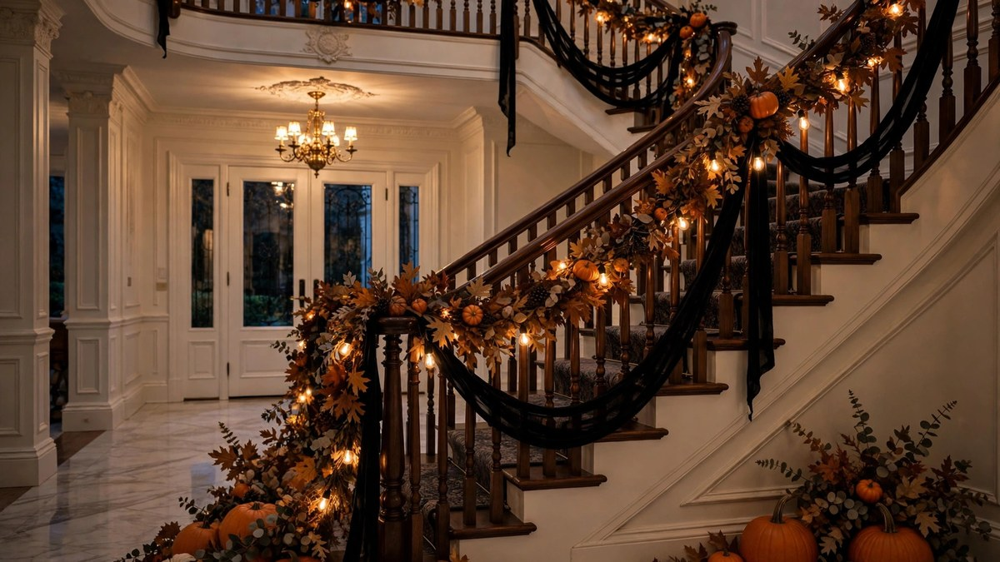

Halloween Staircase Decoration Ideas 2026: Banisters & Steps
Published October 17, 2026 · Updated October 17, 2026 · By EventBuzz Team · 4 min read

Staircases are Halloween’s most underused canvas. A dressed banister draws the eye upward, makes entryways dramatic, and turns an everyday architectural feature into a seasonal showpiece.
These Halloween staircase decoration ideas for 2026 work for straight stairs, curves, and small steps — with renter-friendly options throughout.
Banister Garland Basics
The banister garland is the foundation. Drape (don’t wrap tightly) your garland along the handrail, securing with removable hooks or ribbon every 60–90 cm.
- Faux-leaf garland: autumn colours for harvest warmth.
- Black tassel garland: dramatic, modern, Halloween-perfect.
- Eucalyptus + pumpkins: elegant with mini pumpkins tucked in.
- Bat swarm garland: black card bats on a string — spooky and cheap.
Weave fairy lights through any garland for evening magic. Battery packs hide behind newel posts.
Step Styling
- Pumpkin cascade: a pumpkin on every other step, graduated sizes. The classic stair photo.
- Lantern steps: LED lanterns or luminaries on alternating steps — stunning after dark.
- Candle clusters: group pillar candles (LED!) at the base and top.
- Runner overlay: a dark runner with Halloween motifs transforms the whole staircase.
Safety first: keep the walking path clear. Decorate edges and sides, never the centre tread where feet land.
Newel Post Moments
The newel posts (the chunky ends) are natural focal points:
- Top with an oversized pumpkin or lantern.
- Wrap with ribbon and hang a small wreath.
- Place a witch hat or skull as a playful topper.
- Flank with tall candlesticks for drama.
Renter-Friendly & Small-Space Ideas
- Command hooks and removable adhesive — no nails, no damage.
- Freestanding lanterns need no fixing at all.
- A garland draped (not tied) stays put with tucked ends.
- For apartments: style just the entry steps or a hallway console with the same principles.
Frequently Asked Questions
How do I attach garland to a banister without damage?
Drape it loosely and secure with ribbon ties or removable hooks every couple of feet. Avoid nails, staples, or tight wire.
Is it safe to put candles on stairs?
Use LED candles only on stairs — real flames near foot traffic and fabrics are a serious risk. LED looks identical in photos.
What if I have a small staircase?
Scale down: a single garland, three pumpkins graduated on steps, and one lantern. Small stairs need restraint to stay elegant.
How do I light a staircase for Halloween?
Weave warm fairy lights through the garland and add LED lanterns on steps. Keep the light warm — cool white reads Christmas, not Halloween.
Conclusion
A dressed staircase turns the most ordinary part of the house into Halloween’s grand entrance. Garland, light, pumpkins — and always, safety first.
Keep decorating with our mantel, porch, and lighting guides.
Share this guide with friends and family — and have a fantastic Halloween 2026.
Staircase Decor Picks
Garlands, lanterns and lights for the banister.


Links take you to Temu, where shipping and delivery details are shown. Prices can change.